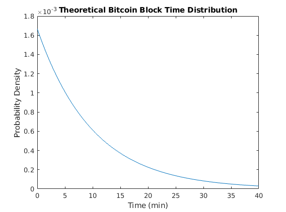
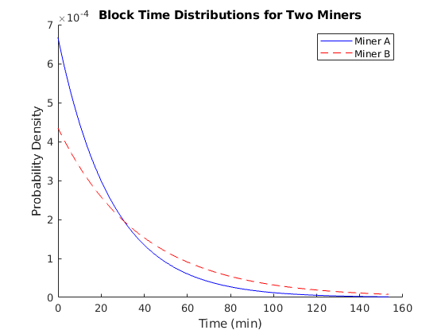
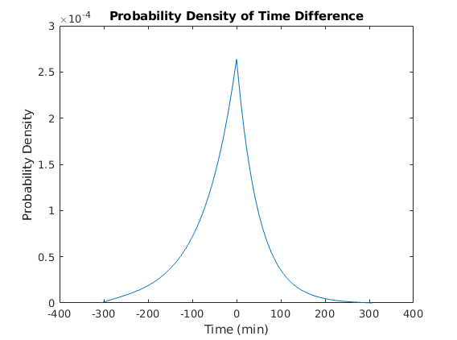
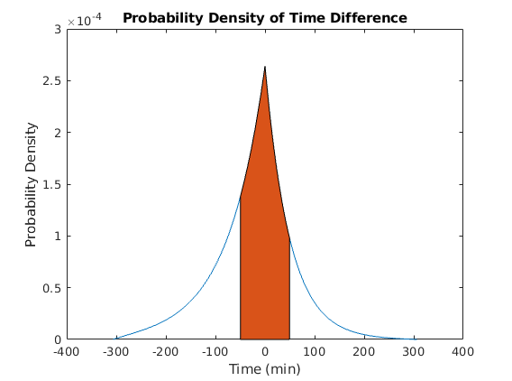

Mining a block in a Proof-of-Work blockchain is very well modeled as a Possion process. Although technically your search space will reduce if you find a nonce that doesn't work, the search space is so large (compared to what we're able to seach) that it may as well be infinite. Furthermore, individual hashes are occuring so quickly compared to expected block time that you can almost think of them as being continuous.
Well, I know it's hand wavy, but it's enough to convince me.
Knowing that finding a nonce is a Poisson process, we can deduce that the distribution of times between successes follows an exponential distribution (this is a fundamental property of Poisson processes).
Luckily for us, we can very safely assume the rate of this process is constant. In Bitcoin (and most other PoW blockchains) the network will dynamically adjust itself to maintain an expected block time. It's rare for the real world to cater itself so easily to simplified analysis!
Using the following MATLAB/Octave code, I generated a plot of the (theoretical) block time distribution in bitcoin:
rate = 1/600; % s^-1
ti = 0; % Initial time = 0 s
tf = 4/rate; % Final time = 4* (expected block time) in seconds
h = 10; % Timestep = 10 s
t = linspace(ti, tf, (tf-ti)/h);
figure(1);
clf;
plot(t/60, rate*exp(-rate * t));
title('Theoretical Bitcoin Block Time Distribution');
xlabel('Time (min)');
ylabel('Probability Density');

How does this compare to real measurements? I'm sure it compares very favourably, but I wasn't able to find a histogram of block times in under 5 minutes. I'll download some CSV data and make my own at some point in the future.
Consider two miners, with block finding rates rA and rB (respectively). Let A be the random variable representing the time for the first miner to find a block, and likewise for the random variable B. Before going on, let's look at a plot:
rA = 1/1500; % Miner A finds a block in 1500 seconds (on average)
rB = 1/2300; % Miner B finds a block in 2300 seconds (on average)
ti = 0;
tf = 4/min([rA, rB]); % Make sure we have enough room to see
h = 10; % 10 second resolution
t = linspace(ti, tf, (tf - ti) / h);
figure(1);
clf;
hold on;
plot(t/60, rA*exp(-rA*t), 'b-');
plot(t/60, rB*exp(-rB*t), 'r--');
legend({'Miner A', 'Miner B'});
title('Block Time Distributions for Two Miners');
xlabel('Time (min)');
ylabel('Probability Density');

Well that's all fine and dandy, but now I want to ask a question: "What is the probability that the miners will generate a conflicting block?" This would happen if the time difference between both miners finding a block was less than the time it would have taken to send that block over the network (and the time to process it on your copmuter).
From the theory of probability distributions, the PDF of the difference of two random variables is the cross-correlation of their PDFs (if they are independent).We can easily do this numerically:
rA = 1/1500; % Miner A finds a block in 1500 seconds (on average)
rB = 1/2300; % Miner B finds a block in 2300 seconds (on average)
ti = 0;
tf = 4/min([rA, rB]); % Make sure we have enough room to see
h = 10; % 10 second resolution
t = linspace(ti, tf, (tf - ti) / h);
distA = rA*exp(-rA*t);
distB = rB*exp(-rB*t);
diff_dist = xcorr(distA, distB);
% Because we're working with discrete signals as opposed to continuous, we
% need to "divide by the sampling frequency" after doing the cross
% correlation:
diff_dist = diff_dist*h;
figure(1);
clf;
l = length(diff_dist);
t_corr = linspace(...
ti - (l - 1) * h, ...
ti + (l - 1) * h, ...
l ...
); % It's a good thing I took signals and DSP from Dr. Stevenson!
plot(t_corr/60, diff_dist);
title('Probability Density of Time Difference');
xlabel('Time (min)');
ylabel('Probability Density');

Now if the average time for blocks to be propagated and accepted by other miners is 50 minutes (this is not
the real number),
then we can find the probability of collision between miners A and B by
intergating the above distribution between -50 and +50 minutes. Simply run this code immediately after generating the
last plot:
hold on;
indices = find(abs(t_corr) < 50*60);
area(t_corr(indices)/60, diff_dist(indices));
fprintf('The probability of collision between miners A and B is %g%%\n',...
trapz(diff_dist(indices))*h*100);
This is exciting: we'll use our notion of conflict probability to actually predict the number of conflicting blcoks we would expect to see in Bitcoin and Ethereum.
To do this we need to think about each miner's contribution to the total rate of conflicts. Essentially, for each miner, we'll let rA be that miner's rate of block discovery, and rB the rate of block discovery due to the rest of the network.